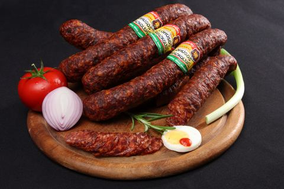
Kolbászok, grill- és főzőkolbászok Lóhúsos kolbász Termék megtekintése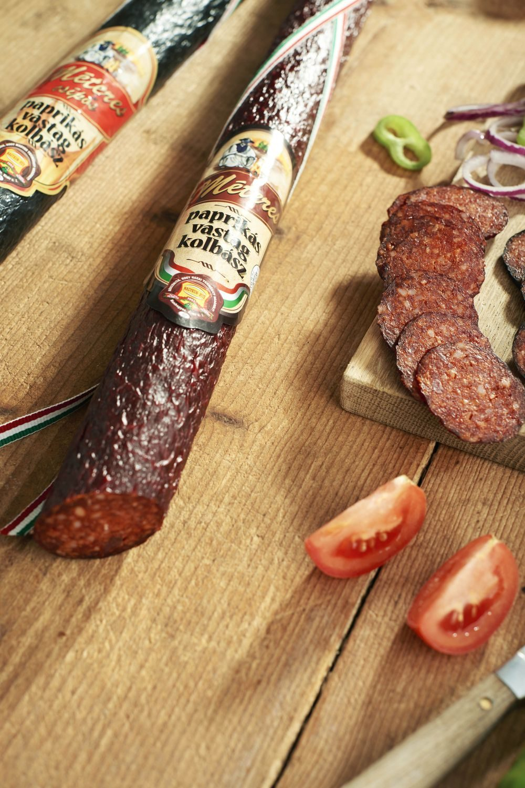
Méteres paprikás vastag kolbász · Magyar Termék Nagydíjas
Kunhegyes · 1992 óta
Sajátos hazai ízek— Kunhegyesről, 1992 óta.
Sertésvágás, darabolás és húskészítmény-gyártás saját üzemünkben, a Nagykunságban. Kínálatunk 422 tételből áll.
- Alapítás
- 1992
- Tapasztalat
- 30+ év
- Munkatárs
- 180 fő
- Termék a kínálatban
- 422
- Exportpiac
- ROSKNL
Termékeink
Vörösárutól a füstölt sonkáig.
18 termékcsoport, 422 tétel. Válasszon csoportot, vagy keressen terméknévre, cikkszámra, vonalkódra.
-
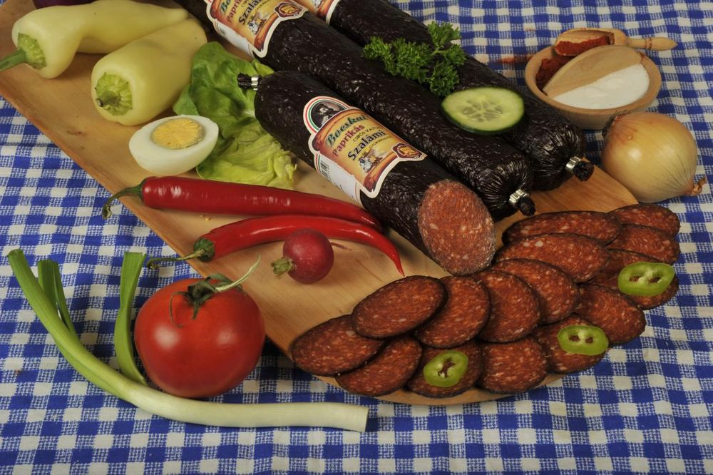
Szalámik és vastag kolbászok 30 tétel - Kolbászok, grill- és főzőkolbászok 27 tétel
-
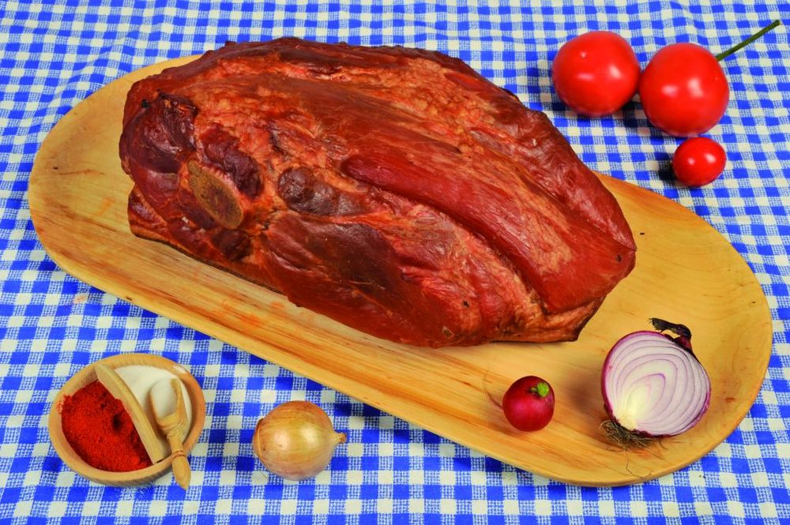
Füstölt és pácolt húsok 47 tétel -
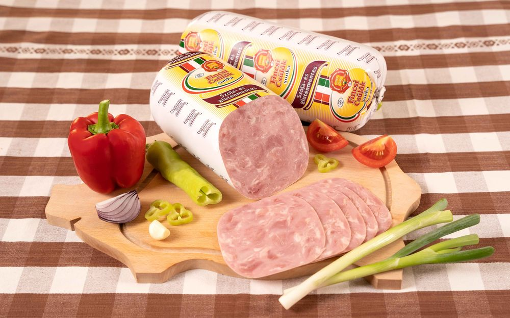
Felvágottak és sonkák 16 tétel -
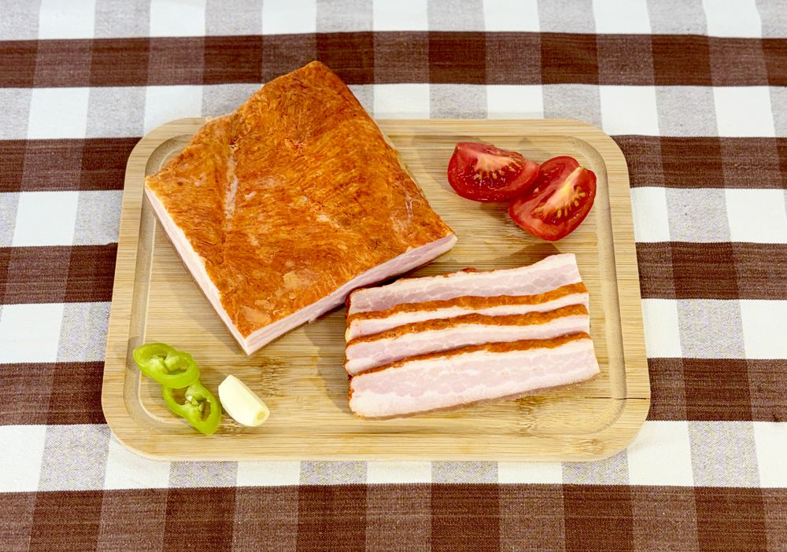
Füstölt és fűszerezett szalonnák 19 tétel -
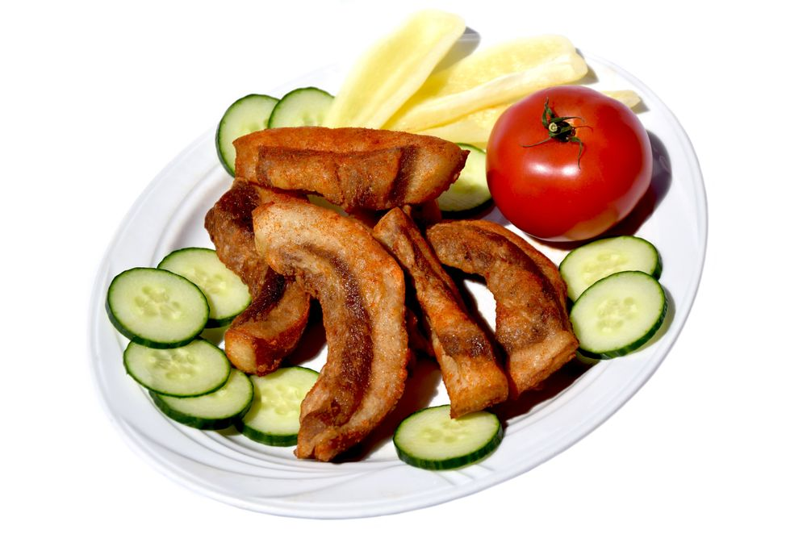
Tepertő, pörc, sertészsír 16 tétel -
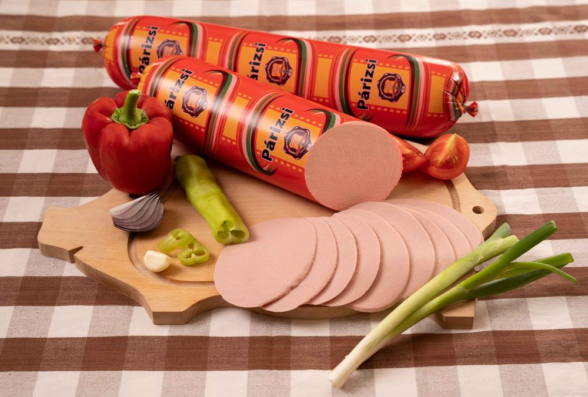
Párizsi és virsli 4 tétel -
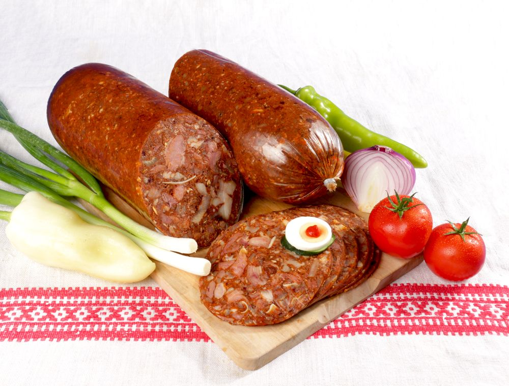
Hurka, májas, disznósajt 15 tétel -
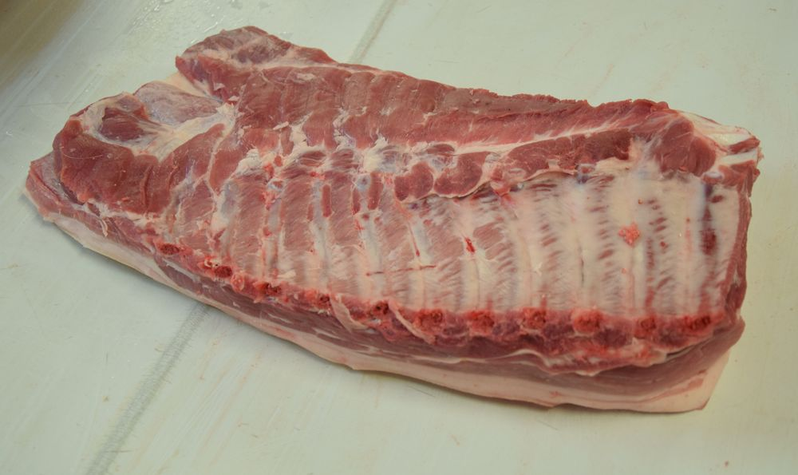
Sertés — bontott és darabolt 111 tétel

A ház zászlóshajója
Méteres paprikás vastag kolbász
Válogatott nagykunsági alapanyagokból, sertéshús, marhahús és szalonna felhasználásával készülő gyorsérlelésű füstölt vastagkolbász. A csomagolásának szerves eleme a nemzeti színű szalag.
- Magyar Termék NagydíjNagydíjas termék
- Innovációs Díj2012 · MTA DAB és JNSZ Megyei Kereskedelmi és Iparkamara
- Vármegyei Értéktár2023 · „Nemzeti érték” besorolás
Változatok
Ízelítő
A kínálatból.
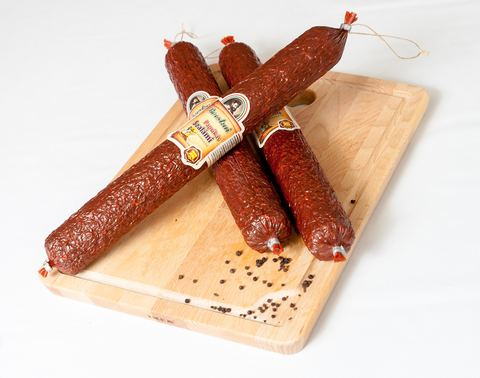
Szalámik és vastag kolbászok Bocskai paprikás szalámi Termék megtekintése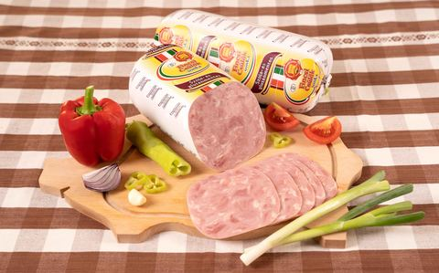
Felvágottak és sonkák Fincsi Csülök Sonka Termék megtekintése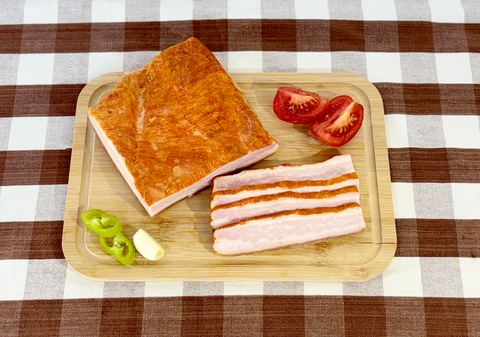
Füstölt és fűszerezett szalonnák Erdélyi szalonna (paprikás) Termék megtekintése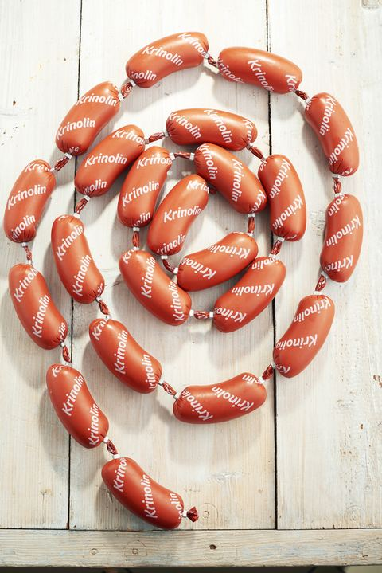
Szója- és gluténmentes készítmények Fincsi Krinolin (Szója- és gluténmentes) Termék megtekintéseTörténetünk
Több mint három évtized.
1992-ben Kunhegyesen indultunk sertésvágással és húskészítmény-gyártással. Ma 180 munkatársunk dolgozik az üzemben.
A teljes bemutatkozás-
1992
Megalakul a Nagykun-Hús
Kunhegyesen indul a munka: sertésvágás, bontás, darabolás és töltelékes húskészítmény-gyártás.
-
2000
Saját szakemberképzés
A Nagy László Szakközépiskolával közösen elindítjuk a húsfeldolgozó szakmunkások önálló képzését.
-
2002 · 2006
Kétszer Kiváló Gyakorlati Képzőhely
A címet és a díjat a JNSZ Megyei Kereskedelmi és Iparkamarától kaptuk.

-
2004
Határon túl is
Az uniós csatlakozás óta termékeink határon kívül is megtalálták vevőkörüket.
-
2008
Az év vállalkozása
„2008. Év Vállalkozása” díj a megyei iparkamarától, és Jász-Nagykun-Szolnok Megyei Gazdasági Díj.
-
2012
Innovációs Díj a Méteres kolbászért
A Méteres paprikás vastag kolbász fejlesztéséért az MTA Debreceni Akadémiai Bizottságától és a megyei iparkamarától.
-
2014
Magyar Agrárgazdasági Minőség Díj
Az elismerést Magyarország vidékfejlesztési minisztere adományozta.
-
2021
Megújul a kiszolgáló épület
Energetikai felújítás a GINOP-4.1.4 program támogatásával.

-
2022
1064 m² új üzemrész
Befejeződik a komplex üzemfejlesztés (GINOP-1.2.12), 483,5 millió forint támogatással.
-
2023 · 2024
Értéktár és hipoallergén termékcsalád
A Méteres paprikás vastagkolbász a vármegyei értéktárba kerül; a Szegedi Tudományegyetemmel kilenc elemből álló hipoallergén termékcsaládot fejlesztünk ki.
-
Ma
180 munkatárs, 422 tétel
Kínálatunk 422 tételből áll; termékeink mintegy hatvan százalékát belföldön értékesítjük, exportunk főként Romániába, emellett Szlovákiába és Hollandiába irányul.

A háttérben
Ahol a termékeink készülnek.
Vágás, darabolás, gyártás és kiszállítás Kunhegyesről. Az üzemben a HACCP rendszert a vágástól a zsírgyártásig minden folyamatra bevezettük.
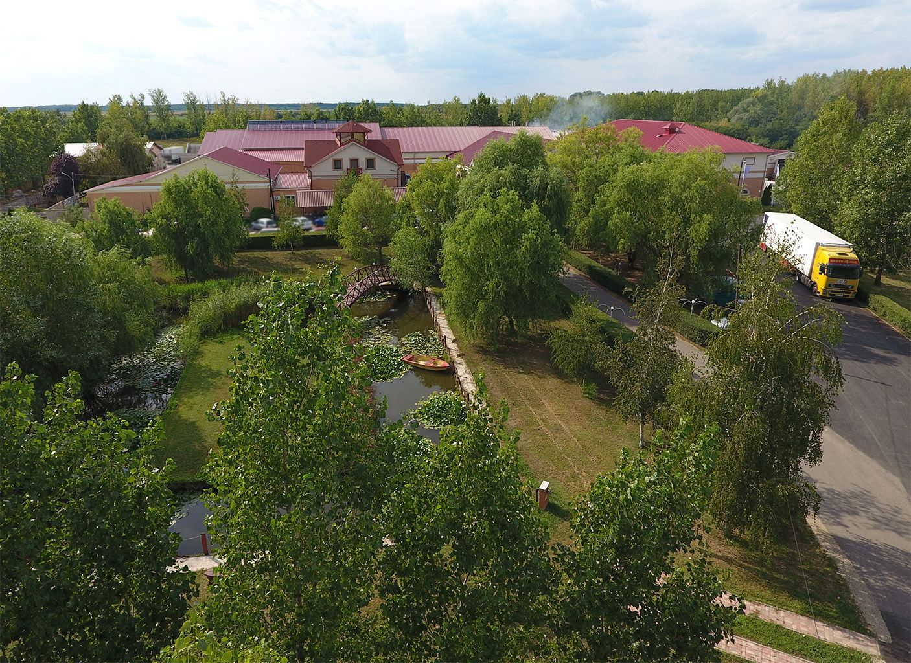
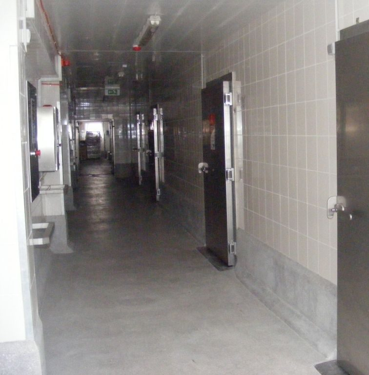
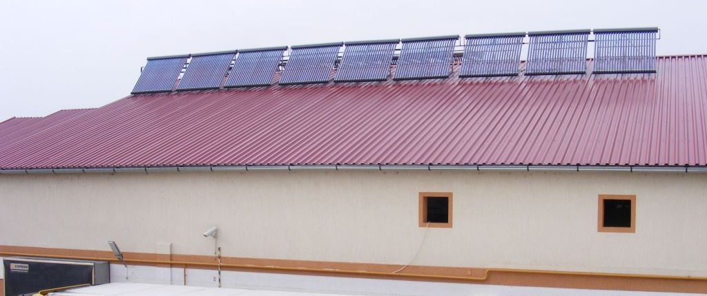
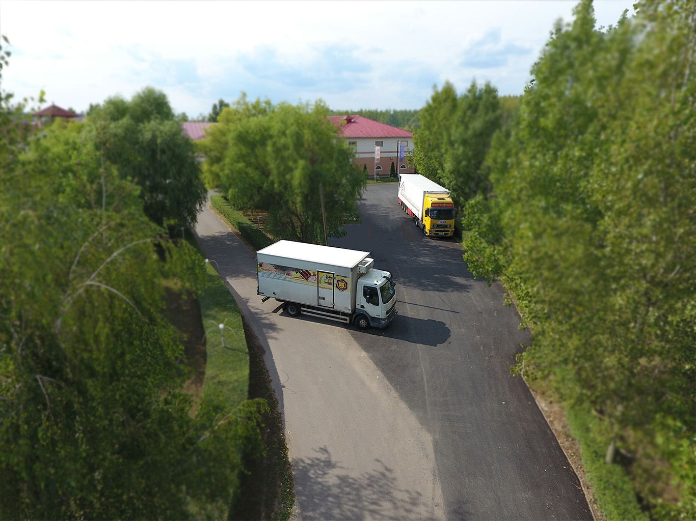
- EU-s minősítés
- HU 452 EK
- Új üzemrész, 2022
- 1064 m²
- Értékesítés
- 50% készítmény, 50% tőkehús
- Fűtés
- Bálás kazán, saját földterületről
Amire építünk
Termékszerkezet és minőség.
„Forgalmunk növekedésének sikerét a termékszerkezetben és a minőségben látjuk. Igyekszünk egyedi ízvilággal sajátos hazai ízeket kialakítani.”
-
01
Élelmiszerbiztonság
HACCP rendszer a sertésvágás, a csontozás, a húskészítmény- és az étkezési sertészsír-gyártás folyamataira. EU-s minősítésünk: HU 452 EK.
-
02
Elismert termékek
Magyar Termék Nagydíj, Innovációs Díj (2012), Magyar Agrárgazdasági Minőség Díj (2014).
Díjak és minősítések -
03
Fejlesztés
Kilenc elemből álló hipoallergén termékcsalád a Szegedi Tudományegyetemmel, és Fincsi termékvonalunk: 14 szója- és gluténmentes tétel.
Fincsi termékek -
04
Szakemberképzés
2000 óta képezünk húsfeldolgozó szakmunkásokat; kétszer nyertük el a Kiváló Gyakorlati Képzőhely címet.
Állásaink
Aktuális
Fejlesztések, hírek.
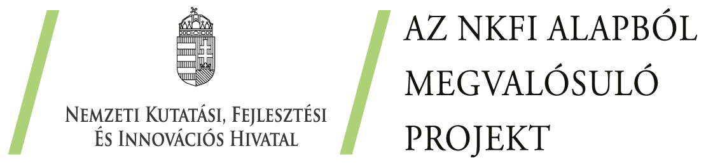
Elkészült a hipoallergén termékcsalád A Szegedi Tudományegyetemmel közösen kilenc elemből álló hipoallergén húskészítmény-családot és gyártástechnológiát fejlesztettünk ki. Tovább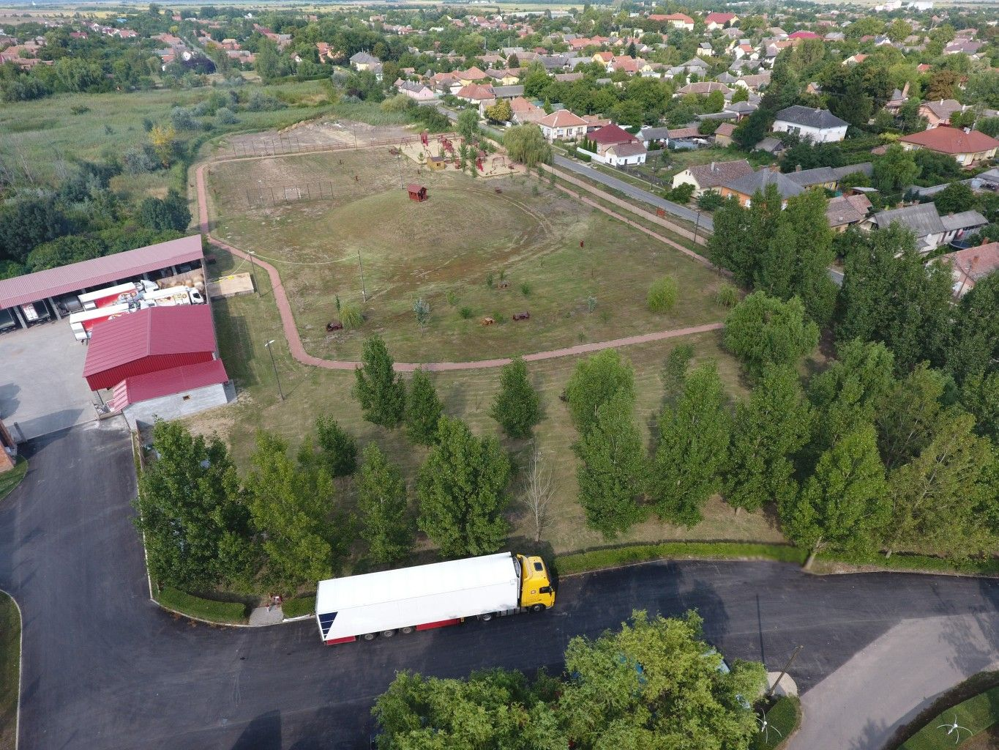
1064 m²-rel bővült az üzem Befejeződött a GINOP-1.2.12 komplex beruházás: új üzemrész, 483,5 millió forint vissza nem térítendő támogatással. TovábbMegrendelés
Rendelését e‑mailben várjuk.
Megrendeléseiket kizárólag a rendeles@nagykunhus.hu címre várjuk. A rendelési lap a kínálatunkból kész megrendelő-levelet állít össze; az árakat a visszaigazolással együtt küldjük.